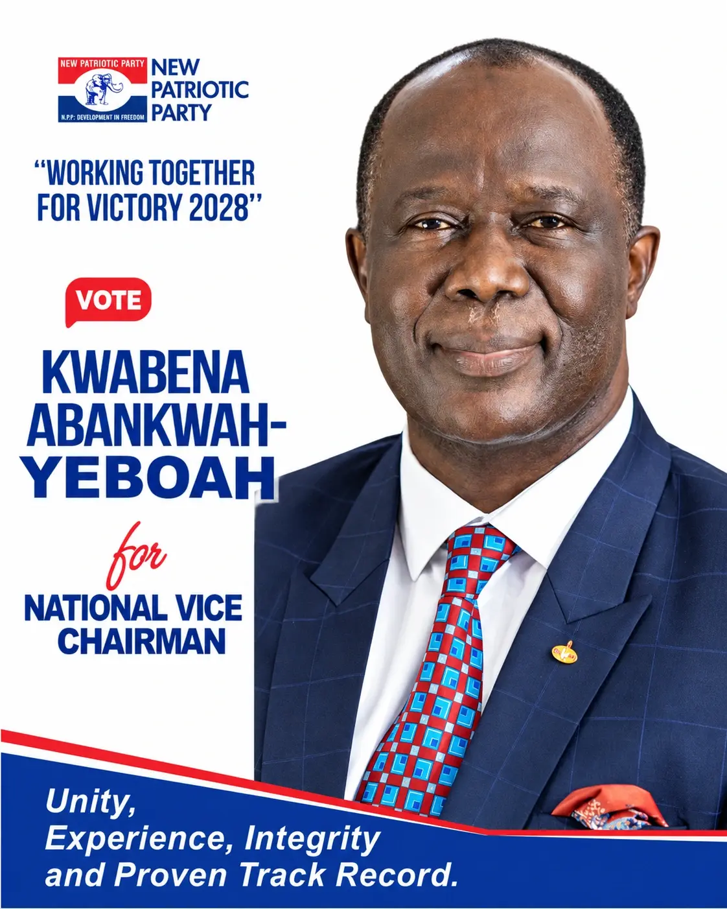
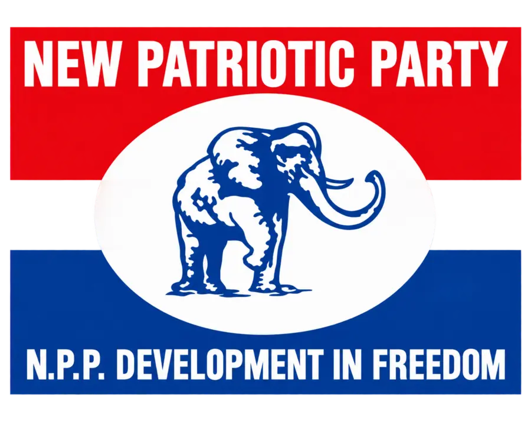
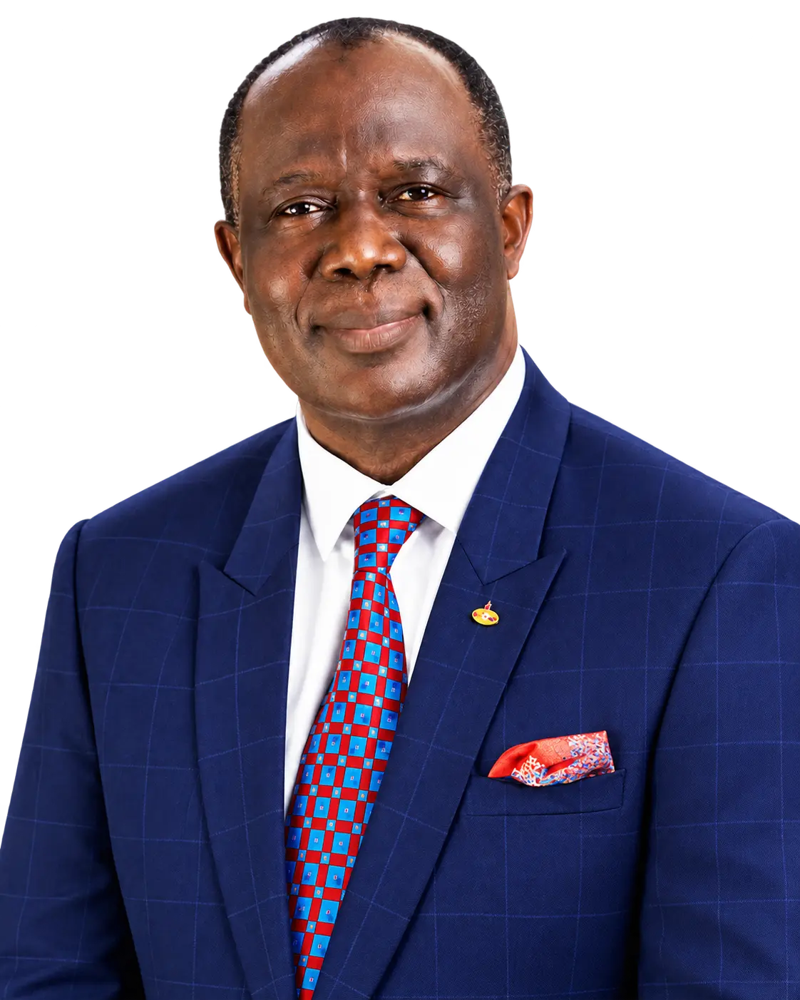
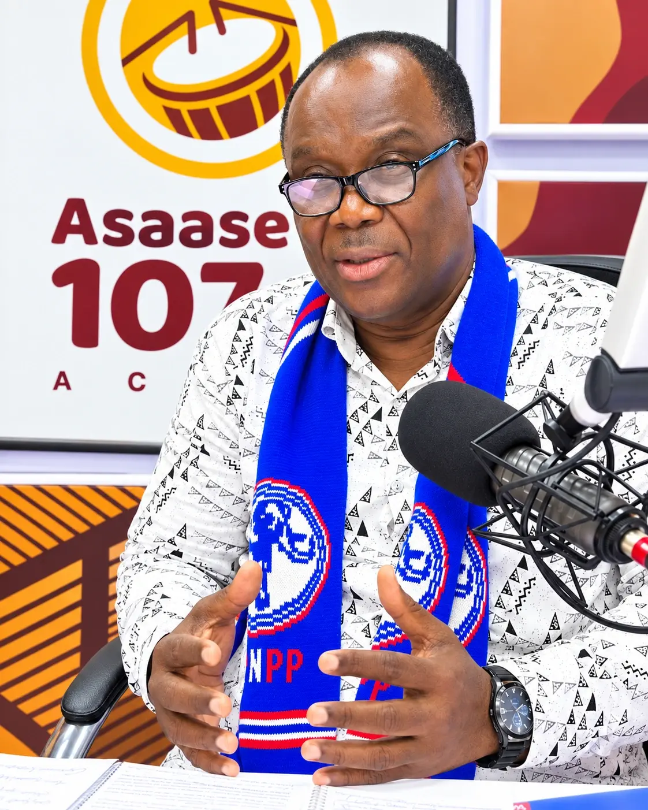
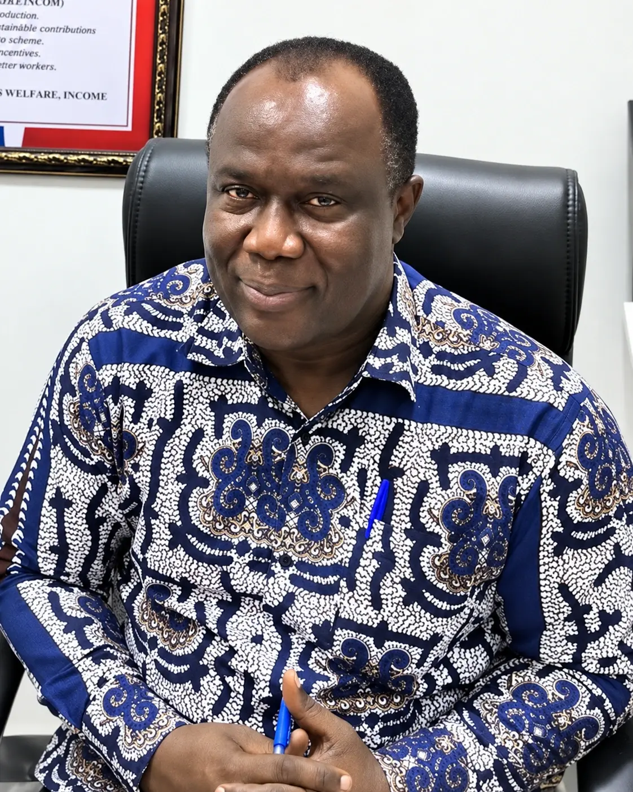
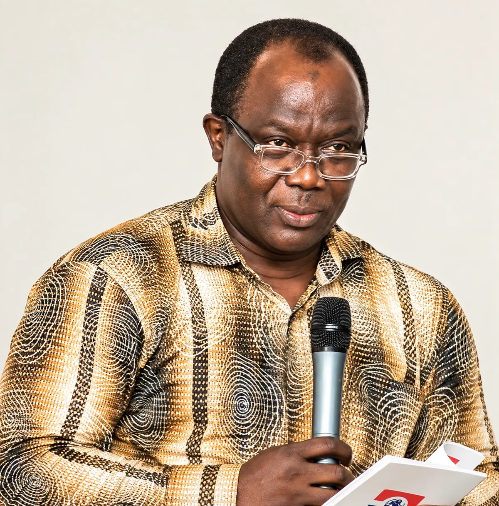
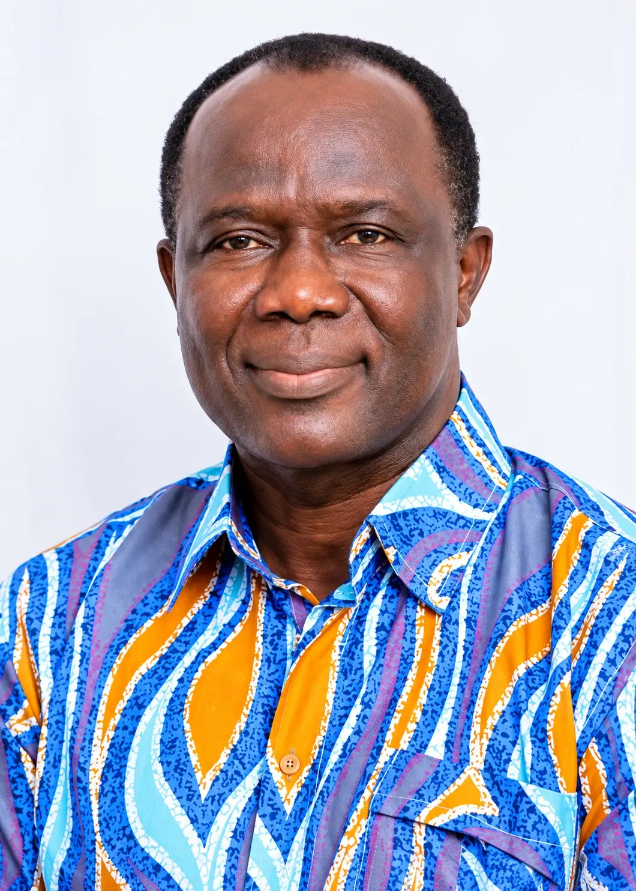

UNITY
One party.
One purpose.
A record of service across polling-station, constituency, regional and national levels.
FOLLOW THE JOURNEY ↘
NEW PATRIOTIC PARTY · GHANA

Former NPP National Treasurer · 2014–2022

UNITY
A record of service across polling-station, constituency, regional and national levels.
FOLLOW THE JOURNEY ↘
EXPERIENCE
Responsibilities in finance, elections, fundraising and party organization.
EXPLORE THE RECORD ↘
INTEGRITY
Eight years recorded as National Treasurer, following four years as Greater Accra Regional Treasurer.
VIEW THE TIMELINE ↘
TRACK RECORD
From local organizing to national committee leadership, the supplied record spans more than three decades.
READ THE PROFILE ↘
THE PROFILE
Kwabena Abankwah-Yeboah has served the New Patriotic Party at constituency, regional and national levels.
A founding member of the NPP since 1992, Kwabena Abankwah-Yeboah has served from polling-station and constituency leadership to Greater Accra Regional Treasurer and two terms as National Treasurer, alongside key responsibilities in party finance, elections and fundraising.
VIEW HIS EXPERIENCE ↓
Public service built across the constituency, regional and national levels of the party.
PARTY SERVICE · 1992–2026
EXPERIENCE
PHOTO GALLERY
VIDEO GALLERY
NEWS & ARTICLES
Reporting on his party service, leadership record and political engagements.
THE PUBLIC RECORD